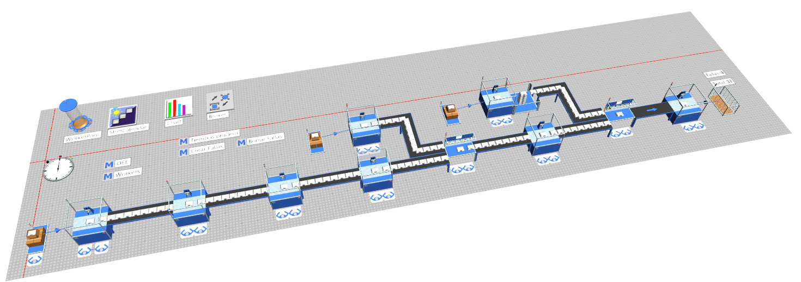

Propuesta de Automatización de la Línea de Producción
1. Justificación de la Automatización
La automatización busca mejorar la eficiencia, reducir errores humanos y aumentar la capacidad de producción. Se identificaron cuellos de botella en estaciones manuales que retrasan el flujo general de ensamblaje o demoras significativas en estaciones como chasis, que al ser iniciales condicionan los tiempos de la cadena completa; además, para mantener la producción de las 3 líneas de productos, la selección de elementos correspondientes agrega tiempos improductivos. Se espera entonces que la implementación de sistemas automáticos genere un incremento en el OEE y reduzca los tiempos de ciclo y de ensamble general, entendiendo estos indicadores como herramientas para el monitoreo del desempeño de la planta.
2. Propuesta Técnica
- Integración de cintas transportadoras automatizadas para el flujo de motocicletas.
- Estaciones robotizadas para tareas repetitivas como fijación y posición en estaciones complejas como el chasis.
- Sensores, actuadores y visión artificial para garantizar monitoreo de calidad y seguridad, además de inspecciones automatizadas.
- SCADA o software de monitoreo para trazabilidad y control de las operaciones en tiempo real.
3. Resumen de Estaciones de Ensamblaje
| Estación | Tiempo de Proceso (MM:SS) | Falla (Duración) | Disponibilidad |
|---|---|---|---|
| Marcado | 00:47:24 | Uniform(1200,1320) | 30.09% |
| Chasis 1 | 00:56:57 | Uniform(600,900) | 36.15% |
| Chasis 2 | 00:56:57 | Uniform(600,900) | 36.15% |
| Batería 1 | 00:56:28 | Uniform(600,720) | 35.85% |
| Batería 2 | 00:56:19 | Uniform(600,720) | 35.75% |
| Motor 1 | 00:50:55 | Uniform(600,900) | 32.33% |
| Motor 2 | 00:50:55 | Uniform(600,900) | 32.33% |
| Frenos y suspensión | 00:53:21 | Uniform(600,720) | 33.87% |
| Llantas | 00:53:54 | Uniform(480,1020) | 34.22% |
| Manillar | 00:48:51 | Uniform(600,720) | 31.02% |
| Luces | 00:52:15 | Uniform(300,360) | 32.44% |
| Cableado | 00:52:48 | Uniform(300,420) | 33.52% |
| Corte y doblado | 00:48:18 | Uniform(120,1200) | 30.66% |
| Asiento y detalles | 00:52:15 | Uniform(300,420) | 33.17% |
4. Simulación del estado propuesto
Se ha modelado la línea de ensamblaje propuesta considerando flujos paralelos (para baterías, motores y chasis), la inclusión de la celda de chasis robotizada en condiciones de trabajo iguales a las anteriores: 1 turno de 8 horas, 5 días a la semana.
5. O.E.E. y Tiempos por estación
| Estación | Ciclo Real (s) | Uptime (%) | Disponibilidad | Rendimiento | OEE | OEE (%) |
|---|---|---|---|---|---|---|
| Marcado | 2843.5 | 30.09 | 0.3009 | 1.000 | 0.3009 | 30.09 |
| Chasis 1 | 3416.2 | 36.15 | 0.3615 | 0.832 | 0.3009 | 30.09 |
| Chasis 2 | 3416.2 | 36.15 | 0.3615 | 0.832 | 0.3009 | 30.09 |
| Batería 1 | 3387.8 | 35.85 | 0.3585 | 0.839 | 0.3009 | 30.09 |
| Batería 2 | 3378.4 | 35.75 | 0.3575 | 0.842 | 0.3009 | 30.09 |
| Motor 1 | 3055.2 | 32.33 | 0.3233 | 0.931 | 0.3009 | 30.09 |
| Motor 2 | 3055.2 | 32.33 | 0.3233 | 0.931 | 0.3009 | 30.09 |
| Frenos y suspensión | 3200.7 | 33.87 | 0.3387 | 0.888 | 0.3009 | 30.09 |
| Llantas | 3233.8 | 34.22 | 0.3422 | 0.879 | 0.3009 | 30.09 |
| Manillar | 2923.0 | 31.02 | 0.3102 | 0.973 | 0.3002 | 30.02 |
| Luces | 3197.4 | 32.44 | 0.3244 | 0.889 | 0.2884 | 28.84 |
| Cableado | 3167.6 | 33.52 | 0.3352 | 0.898 | 0.3009 | 30.09 |
| Corte y doblado | 2897.4 | 30.66 | 0.3066 | 0.981 | 0.3009 | 30.09 |
| Asiento y detalles | 3134.6 | 33.17 | 0.3317 | 0.907 | 0.3009 | 30.09 |
VSM de la propuesta
Se implementa un diagrama Value Stream Mapping para analizar el proceso o flujo de la planta, que junto a la simulación revelan un cambio notorio en los tiempos de ciclo con respecto al estado actual de la planta.
6. Comparativo Antes vs Después
| Indicador | Antes | Después |
|---|---|---|
| Tiempo total de ensamblaje | 98:56 horas | 12:19 horas |
| Personal necesario | 18 operarios | 12 operarios |
| Producción mensual | 13 unidades | 64 unidades |
| Índice OEE | 45% | 30% |
7. Consideraciones de Seguridad
La implementación incluirá análisis de riesgos bajo normativa ISO 12100. Se consideran zonas seguras delimitadas, paro de emergencia accesible, entrenamiento al personal y mantenimiento predictivo utilizando sistemas de monitoreo constante para evitar fallos inesperados.
8. Conclusión
La automatización de la línea permitirá a Blue Energy Bikes mejorar sus indicadores clave de producción, ser más competitiva y garantizar productos de alta calidad, con un retorno estimado de inversión en menos de un año.
Es importante destacar que a pesar de aumentar significativamente la producción y disminución de tiempos y erorres, además de la adición de personalización en la estación de portaplaca, la línea de producción puede ser mas sencilla, en cuanto a fusión de estaciones, ya que el O.E.E. resulta siendo más bajo que el inicial, lo que indica que no se está explotando todo su potencial, a pesar de cumplir con la expectativa principal de aumento den produccion y reducción de tiempos y errores.